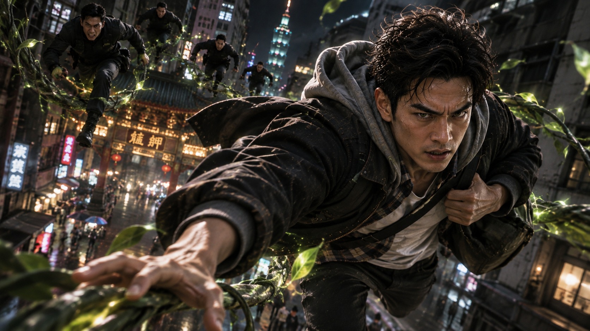
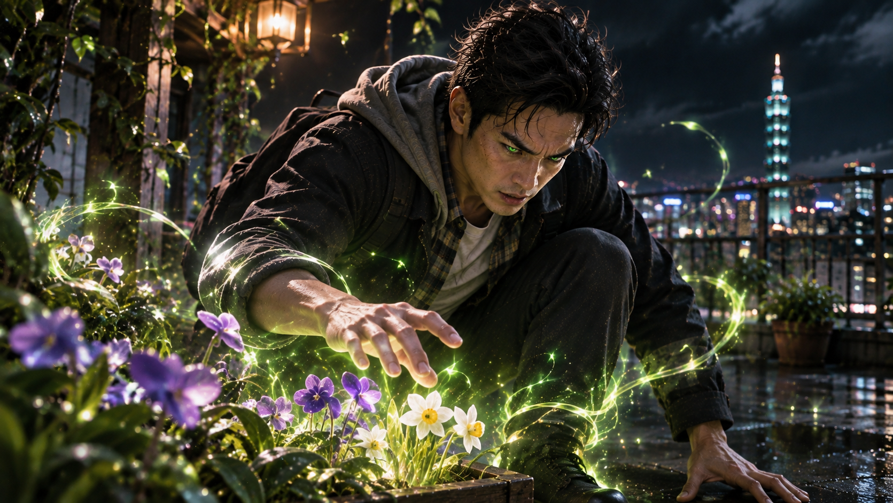
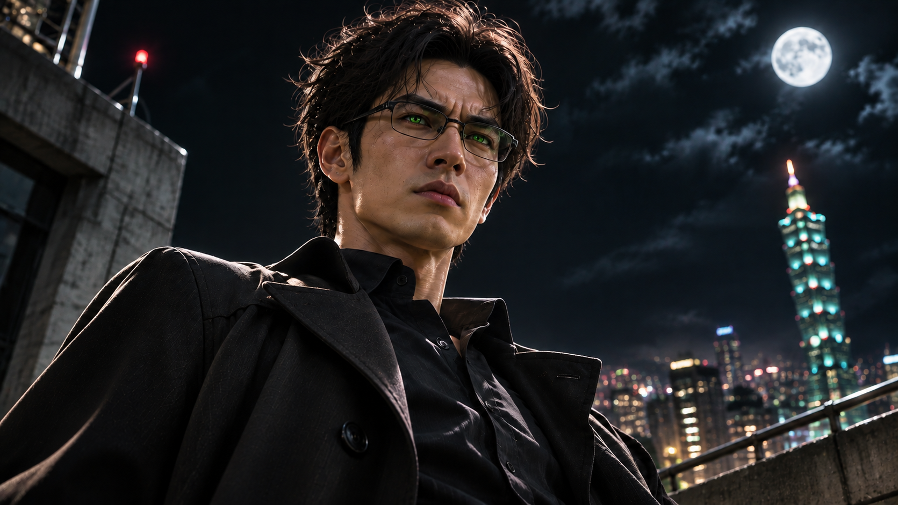
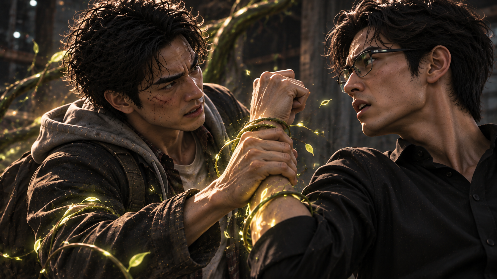
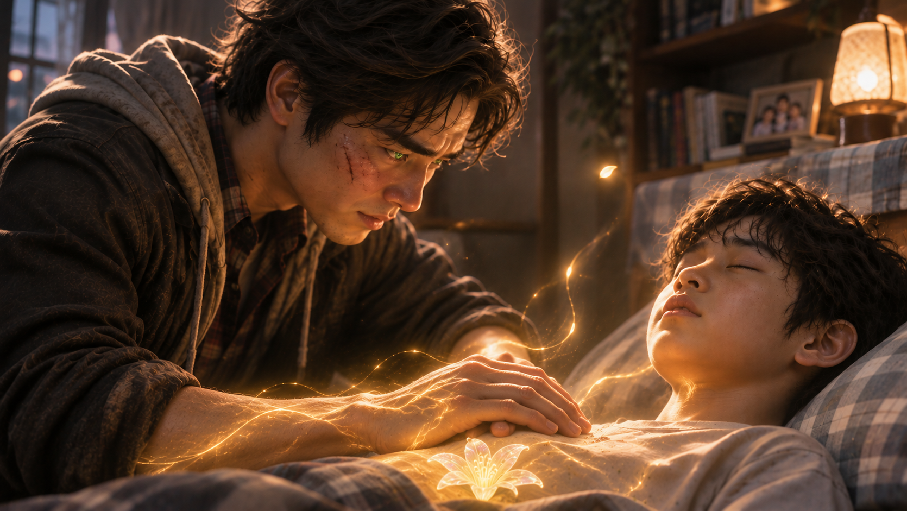

WHITE MAGIC ART STUDIO
第一章
騷亂的夜空
台灣・台北市・萬華區
夜幕低垂。
霓虹燈照亮繁華的街道，車輛在道路上川流不息，行人穿梭於商店與攤販之間，為這座城市增添了幾分熱鬧。
然而，就在這片看似平凡的夜空之上，一場不尋常的追逐，正悄悄上演。
咻——！
一道黑影飛掠過高樓之間。
那是一名身穿黑色斗篷外套的男子。
他左手緊緊護著肩上的側背包，右手則朝前方一揮。
下一秒，原本攀附在建築外牆上的藤蔓突然加速生長，沿著牆面迅速向上延伸！
男子踩上藤蔓，借力躍起，身影輕盈地掠過街道上空。
緊接著，他又伸手抓住另一棟建築旁延展而出的樹枝，順勢一盪，穩穩落在對面的屋頂。
整套動作行雲流水。
遠遠望去，簡直像漫畫裡的蜘蛛人，正自由穿梭於鋼筋水泥之間。
而這名男子，正是梁景皓。
只不過，今晚的他並不是一個人。
「大少爺！」
後方傳來一聲呼喊。
「別跑了！」
幾名男子正沿著不斷生長的粗壯樹枝追趕而來。
他們腳下的枝條宛如活物，隨著奔跑的方向不斷延伸，支撐著眾人在高樓之間快速移動。

景皓回頭瞥了一眼。
看見那群緊追不捨的身影，他非但沒有緊張，反而露出一抹笑容。
「哎呀……」
他輕輕搖頭。
「追得還挺認真的嘛。」
景皓轉身躍上另一棟公寓的屋頂。
「那就讓我看看……」
他回頭朝追兵笑了笑。
「你們在老爸的訓練下，究竟長進了多少吧！」
話音剛落，他猛然加速。
然而，當雙腳落在屋頂時，景皓忽然發現了什麼。
「喔？」
眼前竟是一座小巧的露天花園。
幾盆紫羅蘭與水仙花整齊地擺放在角落，嬌嫩的花瓣隨著夜風輕輕搖曳。
景皓的眼睛微微一亮。
「運氣不錯嘛。」
他停下腳步。
下一秒，原本深棕色的瞳孔，竟逐漸轉為耀眼的碧綠色。
那些原本安靜綻放的花朵，彷彿感受到某種召喚。
細微的光芒從花瓣間浮現。
紫色、淡藍色、金黃色……
一點點柔和的光輝，宛如螢火蟲般從花朵中飄起，緩緩朝景皓聚集。
那些光點沿著他的雙腳盤旋，最後融入腳踝。

景皓輕輕活動了一下雙腿。
「謝啦。」
他朝花朵眨了眨眼睛。
隨後，猛然蹬地！
砰！
屋頂傳來一聲悶響。
景皓的身影瞬間騰空，竟一口氣越過兩棟大樓之間的距離！
後方的追兵見狀，紛紛睜大眼睛。
「什麼？」
「他又加速了！」
而在數十公尺下方的街道上，人們仍忙著各自的生活。
沒有人注意到，頭頂的夜空正上演著一場奇幻的追逐。
「糟了！」
一名追兵停下腳步，焦急地按住耳邊的通訊器。
「二少爺！」
「我們恐怕要跟丟大少爺了！」
通訊器另一端，傳來一道冷靜的聲音。
「沒關係。」
對方稍微停頓。
「讓他來吧。」
距離數條街外，一名男子正站在高樓邊緣。
夜風吹動他的衣角。
他戴著一副眼鏡，五官與梁景皓有幾分相似，卻有著更加分明的輪廓，以及一雙顯得格外冷峻的眼睛。
透過鏡片，可以看見他的瞳孔正散發著翠綠色的微光。
男子緩緩抬起頭。
四周的植物彷彿成了他的眼睛，將遠方的動靜一一傳入他的感知之中。
片刻後，他嘴角微微一沉。

「哼……」
他將目光鎖定在遠方某棟大樓。
「我們梁家的家務事……」
男子向前踏出一步。
「就由我親自解決吧。」
話音剛落。
他縱身躍下！
身影沿著大樓外牆急速下降，隨即在建築邊緣猛然借力，整個人瞬間改變方向，朝遠方疾衝而去。
速度之快，幾乎只剩一道模糊的殘影。
而此時，正在前方奔跑的景皓，忽然察覺到一股熟悉的氣息。
「嗯？」
他下意識回頭。
下一秒——
砰！
一道身影猛然撞上他的肩膀！
兩人同時失去平衡，翻滾著衝進一棟尚未完工的大樓。
轟！
堆放在地上的建材被撞得四散，揚起大片灰塵。
片刻後。
煙塵之中，傳來一聲輕笑。
「哎呀……」
景皓慢慢站起身，拍了拍外套上的灰塵。
「看來老爸這次是玩真的啊。」
他抬起頭。
望著對面那名熟悉的男子，嘴角逐漸揚起。
「竟然連我最親愛的弟弟都派出來了。」
對方沒有回應他的玩笑。
只是冷冷地伸出手。
「把花交出來。」
景皓挑起眉毛。
「一見面就這麼兇？」
「梁景皓。」
男子的聲音更加低沉。
「我再說一次。」
「把神癒花交出來！」
景皓望著他。
片刻後，無奈地嘆了口氣。
「景毅啊……」
他攤開雙手。
「我們從小就在家裡看著那兩朵花，放了這麼多年，也沒見有人使用過。」
他微微歪頭。
「既然如此，讓我拿來好好運用，不是挺好的嗎？」
梁景毅的眼神瞬間冷了下來。
「你以為那是什麼普通的花？」
他向前一步。
「神癒花，全世界只剩下你手上的那兩朵！」
「你覺得家族會隨便動用這種東西嗎？」
景皓沉默了一瞬。
隨後，忽然笑了。
只是這一次，笑容裡少了幾分玩笑的意味。
「哈……」
他輕輕搖頭。
「果然。」
景毅皺眉。
「什麼？」
「你跟老爸還真是一模一樣。」
景皓抬起眼睛。
「對生命的價值，總有自己的一套標準。」
景毅的表情微微一變。
景皓繼續說：
「明明經營著一間醫院，卻不懂得善用神癒花的力量。」
他停頓片刻。
「甚至……連媽都不救。」
空氣忽然安靜了。
景毅的拳頭緩緩握緊。
景皓卻沒有停下。
「只救那些自己認為『值得救』的人。」
他冷冷地笑了。
「你不覺得很矛盾嗎？」
「夠了！」
景毅猛然怒喝。
聲音在空曠的樓層裡迴盪。
「一個將近十年音訊全無、連家都不回的人……」
他死死盯著景皓。
「少在這裡跟我講這種狗屁道理！」
景皓望著他。
臉上的笑容逐漸淡去。
片刻後，他輕輕嘆了口氣。
「唉……」
「看來真的沒辦法好好談了。」
他將肩包往身後一甩，慢慢擺出戰鬥架勢。
「既然這樣……」
景皓朝弟弟勾了勾手指。
「想把東西搶回去，就拿出點真本事吧。」
景毅冷哼一聲。
「我求之不得！」
下一秒——
砰！
景毅猛然衝上前！
他的右手直奔景皓肩上的背包。
景皓側身閃過，順勢扣住他的手腕，試圖將他甩開。
然而景毅早有準備，立刻轉動身體，另一隻手握拳揮出！
景皓抬臂格擋，隨即一記側踢逼退對方。
兩人迅速拉開距離。
但下一瞬間，又同時衝向彼此！
砰！砰！
拳腳交錯。
兩人的動作迅捷而俐落，攻防之間幾乎沒有多餘的停頓。
景皓的招式靈活多變，總能在對手出招的瞬間尋找破綻。
景毅則更加沉穩，每一次進攻都帶著明確的目的，步步逼近景皓身上的背包。
這是梁家世代相傳的武術。
也是兄弟兩人從小便接受的訓練。
對彼此的招式，他們再熟悉不過。
「不錯嘛！」
景皓閃過一記直拳，忍不住笑了。
「這幾年還真的有進步！」
「少廢話！」
景毅猛然向前踏出一步。
景皓正準備反擊，對方卻突然一個後空翻，拉開距離。
落地的瞬間，景毅低聲喚出一個名字。
一道金色光芒，猛然從他的右手掌心綻放！
嗡——
光芒逐漸凝聚。
一把黑色長矛，憑空出現在他的手中。
矛頭形似修長的葉片，漆黑的矛身上雕刻著細緻的金色紋路，散發出一股莊嚴而神聖的氣息。
那是術器。
專門用來對抗惡魔的聖術武器。
景毅握緊長矛，將矛尖直指景皓。
「最後一次。」
他冷冷地說。
「把花交出來。」
景皓望著那把熟悉的武器。
先是一愣。
隨後，竟忍不住笑了出來。
「不是吧？」
他指了指長矛。
「景毅，你竟然把專門對付惡魔的術器拿出來對付我？」
景皓攤開雙手。
「我可是你哥耶！」
景毅沒有笑。
「對我來說……」
他握緊矛柄。
「你們沒什麼不同。」
景皓臉上的笑容，終於僵了一瞬。
然而，景毅沒有給他繼續說話的機會。
長矛猛然刺出！
景皓立刻側身閃避。
鋒利的矛尖擦過他的外套，劃出一道裂口。
「喂喂！」
景皓連忙後退。
「你還真的來啊！」
景毅沒有回應，持矛再次逼近。
景皓一邊閃躲，一邊伸手抓住滑落肩頭的背包。
拉開拉鍊。
他的手迅速探入其中，抓出一把事先準備好的種子。
「既然這樣……」
景皓握緊拳頭。
啪！
種子在掌心碎裂。
細小的光點瞬間從指縫間湧出，沿著他的手臂迅速融入體內。
一股溫暖而強烈的能量，頓時流遍全身。
景皓抬起頭。
「那我也不客氣啦！」
他猛然踏步，朝景毅揮出一拳！
景毅立刻橫起長矛格擋。
砰——！
一聲巨響！
強烈的衝擊沿著矛身傳來，震得景毅雙臂發麻。
「什麼？」
他還來不及穩住身體，整個人便被那股力量震得向後滑去，重重撞上堆放在地上的建材。
景皓沒有乘勝追擊。
他只是低頭看了看自己的拳頭，隨即轉身朝樓層邊緣奔去。
「謝啦，弟弟！」
「站住！」
景毅咬牙站起。
他猛然將長矛朝地面一劃！
一道翠綠色的光芒沿著地板迅速蔓延。
下一秒——
轟！
粗壯的樹幹竟直接從水泥地面破出！
無數枝條朝景皓的方向疾速延伸，轉眼便封住他的去路。
「什麼？」
景皓猛然回頭。
然而，已經來不及了。
一條藤枝瞬間纏住他的右腳踝！
「哇啊！」
景皓失去平衡，整個人摔倒在地。
他正準備伸手解開藤枝，身體卻被猛然向後拖去！
轉眼間，景毅已經來到面前。
冰冷的矛尖，穩穩停在景皓的喉前。
「結束了。」
景毅冷冷地說。
景皓躺在地上，望著眼前的弟弟。
片刻後，竟又笑了。
「哎呀……」
他輕輕搖頭。
「看來這九年，你真的進步不少啊。」
景毅皺眉。
景皓望向周圍那些仍在緩緩生長的枝條。
「竟然可以跟老爸一樣，連『術之木』都能運用得這麼熟練。」
「你應該很清楚吧？」
景毅沉聲回答。
「木之聖術師的術之木，就算是身為元素使的你，也無法操控。」
他將矛尖稍稍向前。
「所以，別再耍花樣了。」
「把神癒花交出來！」
景皓望著他。
臉上的笑容漸漸收斂。
「好吧……」
他輕輕嘆了口氣。
「既然是我最親愛的弟弟……」
景毅沒有放鬆警戒。
景皓卻忽然露出一抹無奈的笑容。
「我這個當哥哥的，確實應該讓著你一點。」
他停頓片刻。
「不過嘛……」
景毅眼神一變。
「你——」
話音未落！
景皓藏在口袋裡的手，猛然捏碎另一顆種子！
細微的光點迅速融入掌心。
「也正因為你是我最親愛的弟弟……」
景皓突然伸手，抓住景毅握矛的手腕！
「應該能體諒哥哥這麼做吧！」
一股異樣的能量，瞬間沿著兩人接觸的地方傳遞過去。
「呃……！」
景毅的動作猛然一僵。
手中的長矛失去控制，掉落在地。
他踉蹌退後，緊接著跪倒在地，難以置信地望著自己的雙手。

「這……」
他的呼吸逐漸急促。
「是……毒……？」
景皓慢慢站起身。
他沒有立刻回答，只是低頭望著弟弟。
「抱歉啦。」
他拍了拍身上的灰塵。
「我早就猜到，老爸可能會派你來追我。」
景毅咬緊牙關。
景皓繼續說：
「所以在來這裡之前，我就先準備了水芹花的種子。」
他露出一抹苦笑。
「雖然你的聖術進步了很多……」
景皓看著他。
「但跟你一起長大的好處，就是我知道你的弱點。」
景毅試圖站起身，卻又無力地跪了下去。
景皓見狀，從肩包裡取出一顆膠囊。
他彎下腰，將膠囊放在景毅伸手可及的地面上。
「解藥在這裡。」
他的語氣稍微放緩。
「趕快吃下去吧。」
「梁……景皓……！」
景毅咬牙切齒地喊出哥哥的名字。
景皓望著他。
這一次，他沒有再開玩笑。
「對不起。」
他輕聲說。
「但我現在真的很需要神癒花。」
景毅抬起頭。
景皓的眼神，流露出一絲難以掩飾的疲憊。
「我有不得不這麼做的理由。」
他重新將背包固定在肩上。
隨後，慢慢退向樓層邊緣。
離開前，他回頭看了弟弟最後一眼。
「對了。」
景毅死死盯著他。
景皓勉強露出笑容。
「幫我跟爸說一聲……」
他停頓片刻。
「我過得很好。」
下一秒。
景皓轉身躍出大樓。
身影迅速消失在台北的夜色之中。
只留下景毅獨自跪在空曠的樓層裡。
他望著哥哥離開的方向。
久久沒有移開目光。
夜風迎面吹來。
景皓沿著高樓之間的藤蔓快速移動。
然而，當他確定後方已經沒有人追趕時，臉上的笑容卻瞬間消失了。
「可惡……」
他低頭看了一眼手錶。
眉頭緊緊皺起。
剛才與景毅交手，已經耽誤了不少時間。
而他現在最缺少的，就是時間。
景皓再次加快速度。
此刻，他真正擔心的，從來都不是梁家的追兵。
而是一個正在等他回去的人。
一個比自己的生命還要重要的人。
不久後。
景皓在桃園一棟建築的屋頂停下。
確認四周無人，他操控附近的樹枝，讓自己沿著建築外牆緩緩降落。
雙腳剛踏上地面，他便立刻穿過狹窄的巷弄。
最後，停在一間早已打烊的花店前。
門口的招牌上，寫著四個字。
比克花店
景皓連忙掏出鑰匙。
喀嚓。
店門打開。
他迅速閃身進入，反手將門關上，隨即直奔櫃檯後方的樓梯。
三步併作兩步，衝上二樓。
這裡是一間一廳三房的住家。
客廳裡，昏黃的燈光仍然亮著。
一名五十多歲的婦人正坐在沙發旁，神情焦急地替一名男孩擦拭額頭上的汗水。
男孩約莫十歲，臉頰泛紅，呼吸急促，身上蓋著一條薄毯。
「碧雲姐！」
景皓幾乎是衝進客廳。
「昱鎧怎麼樣了？」
婦人猛然抬起頭。
「景皓！你終於回來了！」
景皓連外套都來不及脫，便快步走到沙發旁。
他伸手碰了碰男孩的額頭。
滾燙的溫度，讓他的神情瞬間沉了下來。
「怎麼還這麼燙……」
婦人——張碧雲，滿臉擔憂地望著他。
「我已經照你說的，讓他喝下那副湯藥了。」
她低頭看著男孩。
「可是燒一直退不下來……」
景皓深吸一口氣。
「沒關係。」
他小心翼翼地將男孩抱起。
「接下來交給我。」
「等一下，景皓！」
碧雲連忙跟上。
「我知道你學過醫，可是昱鎧現在這麼嚴重……」
她焦急地看著他。
「真的不用叫救護車嗎？」
景皓停下腳步。
「不用。」
他回過頭。
「昱鎧的情況很特殊。」
碧雲一愣。
景皓低頭看著懷裡的孩子。
「一般醫院的醫生，恐怕幫不上忙。」
「可是——」
「碧雲姐。」
景皓打斷她。
他的語氣放緩，眼神卻格外堅定。
「相信我。」
碧雲望著他。
片刻後，終於輕輕嘆了口氣。
「唉……」
她讓開了路。
景皓感激地點頭。
「謝謝你。」
隨後，他抱著孩子走進房間，輕輕關上了門。
房間裡。
景皓將昱鎧小心地放在床上。
男孩的額頭布滿細密的汗珠，呼吸急促，小小的身軀不時微微顫抖。
景皓坐在床沿，緩緩閉上眼睛。
當他再次睜眼時，瞳孔已泛起柔和的綠光。
他的目光沿著昱鎧的身體緩緩移動，感知著體內異常的變化。
片刻後。
景皓的眉頭皺得更緊了。
「怎麼會……」
他輕輕握住兒子的手。
「昱鎧。」
男孩沒有回答。
景皓望著他，聲音不自覺地放輕。
「兒子……」
他伸手替孩子撥開額前被汗水沾濕的頭髮。
「再撐一下。」
景皓低下頭。
「爸爸回來了。」
他迅速拿起肩包，從裡面取出一個精緻的盒子。
盒蓋緩緩打開。
裡面靜靜躺著一根細長的枝條。
枝頭，綻放著兩朵美麗而奇異的花。
花朵外型有些類似喇叭花，半透明的花瓣泛著柔和的光澤，銀白色的紋路沿著花瓣自然延伸，彷彿細緻的雕刻。
即使只是靜靜放在盒中，也散發著一股難以言喻的生命氣息。
神癒花。
這正是梁景皓不惜與家族為敵，也要帶走的東西。
景皓望著那兩朵花。
眼神逐漸變得慎重。
「拜託了……」
他伸出手，小心翼翼地摘下其中一朵。
接著，輕輕將手掌覆在花瓣上方。
一抹翠綠色的光芒，從他的瞳孔深處浮現。
下一秒。
花瓣開始發光。
無數細小的光點，緩緩從花朵中飄散而出。
那些光芒宛如漫天星塵，在房間裡輕輕盤旋，最後一點一點融入景皓的掌心。
原本盛開的花朵，也隨著光點的流失逐漸消散。
片刻後。
景皓的雙手，已籠罩在一層柔和的光輝之中。
他深吸一口氣。
隨後，將雙手輕輕交疊，放在昱鎧的腹部。
溫暖的光芒，逐漸滲入男孩體內。

「沒事的……」
景皓低聲說。
「昱鎧。」
他望著孩子。
「一切都會好起來的。」
那聲音很輕。
像是在安撫昱鎧。
也像是在說服自己。
時間一分一秒地過去。
房間裡，只剩下男孩的呼吸聲。
漸漸地。
原本急促的喘息，開始慢慢平穩。
昱鎧緊皺的眉頭，也逐漸舒展。
景皓沒有移開雙手。
他緊緊盯著孩子，直到最後一點光芒完全融入體內。
片刻後。
他終於伸出手，再次探向昱鎧的額頭。
「……」
景皓愣住了。
他又摸了一次。
接著，忍不住睜大眼睛。
「我的天……」
燒退了。
真的退了。
「哈……」
景皓緩緩吐出一口氣。
下一秒，整個人彷彿突然失去力氣，沿著床沿坐倒在地。
他靠著床邊，仰頭望向天花板。
久久沒有說話。
直到確認昱鎧的呼吸依舊平穩，他才終於露出一抹如釋重負的笑容。
「老師……」
景皓輕聲呢喃。
「我已經按照你教我的方法，使用神癒花了。」
他停頓片刻。
目光重新落在床上的孩子身上。
「所以……」
景皓的聲音漸漸低了下來。
「你可要替我……」
他輕輕握住昱鎧的手。
「好好守護這個孩子啊。」
叩、叩、叩。
「景皓！」
門外傳來碧雲焦急的聲音。
「怎麼樣了？一切都還好嗎？」
景皓回過神。
他連忙站起身，走向房門。
喀嚓。
房門打開。
「碧雲姐。」
景皓露出笑容。
「沒事了。」
碧雲緊張地望著他。
「真的？」
景皓點頭。
「昱鎧退燒了。」
「哎呀……」
碧雲連忙探頭看向房內。
看見男孩終於安穩地睡著，她這才鬆了一口氣。
「感謝老天爺……」
然而，下一秒。
她忽然轉頭瞪向景皓。
「你這小子！」
景皓嚇了一跳。
「哇！怎麼了？」
「還敢問我怎麼了！」
碧雲雙手插腰。
「你知不知道剛才差點嚇死我！」
景皓尷尬地笑了笑。
「哎呀……碧雲姐……」
「昱鎧可是我看著長大的！」
她越說越激動。
「我從來沒看過他燒成那樣！」
「你還不讓我叫救護車，硬要我等你回來拿什麼……什麼藥！」
景皓連忙舉起雙手。
「好啦、好啦！」
他露出討好的笑容。
「碧雲姐～真的很謝謝你啦！」
「這次的情況比較特殊嘛。」
碧雲瞪著他。
「特殊？」
她哼了一聲。
「我看最特殊的就是你！」
景皓忍不住笑了。
碧雲繼續說：
「要不是十年前那個颱風天，讓我看見你們父子倆在街上淋雨……」
她無奈地搖頭。
「我現在才不會被你折騰得心臟都快受不了了！」
「哎呀！」
景皓立刻露出誇張的感激表情。
「就是因為碧雲姐心地善良、美麗大方，才會收留我們父子啊！」
他笑著繼續說：
「不只讓我在樓下花店工作，還給我們地方住、有飯吃。」
景皓雙手合十。
「您簡直就是天使！」
碧雲忍不住翻了個白眼。
「少來！」
她伸手輕輕拍了拍景皓的手臂。
「就你這張嘴最會哄人！」
景皓嘿嘿一笑。
碧雲看著他，忽然想起什麼。
「不過……」
她微微瞇起眼睛。
「你給我老實說。」
景皓心頭一跳。
「什麼？」
「你以前真的讀的是美國醫學院？」
碧雲皺起眉頭。
「還是其實偷偷學的是園藝？」
景皓瞬間僵住。
「呃……」
他摸了摸鼻子。
「碧雲姐～」
「嗯？」
「這個嘛……」
景皓露出心虛的笑容。
「你就別管那麼多啦！」
他連忙轉移話題。
「總之，善有善報嘛！」
碧雲盯著他看了好一會兒。
最後，只能無奈地嘆氣。
「唉……」
「真是拿你沒辦法。」
景皓笑了笑。
「不過！」
碧雲忽然伸出食指。
「明天一定要帶昱鎧去醫院檢查！」
她認真地看著景皓。
「知道嗎？」
景皓立刻點頭。
「知道、知道！」
「我會帶他去的。」
碧雲這才滿意地點頭。
「那就好。」
她望了一眼房間裡熟睡的昱鎧。
「時間不早了，你也趕快休息吧。」
「好。」
景皓輕聲回答。
「碧雲姐，謝謝你。」
碧雲擺了擺手。
「行啦，少說這些。」
她轉身朝自己的房間走去。
「早點睡！」
「晚安！」
景皓笑著目送她離開。
直到走廊重新恢復安靜，他才輕輕關上房門。
房間裡。
昱鎧依舊安穩地睡著。
景皓走到床邊，輕輕躺在兒子身旁。
他伸出手，替昱鎧整理凌亂的頭髮。
看著孩子終於恢復平靜的睡臉，景皓忍不住露出溫柔的笑容。
「真是的……」
他輕聲呢喃。
「差點被你嚇死。」
昱鎧沒有回答。
只是微微翻了個身，繼續沉沉睡去。
景皓望著他，眼神漸漸柔和下來。
片刻後，他伸手準備關掉床頭燈。
然而，就在這時——
他的動作忽然停住了。
床邊的桌上，靜靜放著那個精緻的盒子。
盒蓋尚未關上。
裡面原本盛開的兩朵神癒花，如今只剩下一朵。
景皓望著它。
臉上的笑容，逐漸消失。
他沉默了許久。
那雙深棕色的眼睛裡，浮現出一抹難以言喻的情緒。
不知為何，他忽然想起了一個聲音。
一個已經許多年沒有親耳聽見，卻始終留在記憶深處的聲音。
那是母親的歌聲。
小時候，每當他因為訓練而疲憊不堪，或是夜裡輾轉難眠時，母親總會坐在床邊，輕輕撫摸他的頭髮，哼唱著那首熟悉的詩歌。
彷彿有什麼被他刻意埋藏多年的往事，正隨著這首歌，再次浮上心頭。
景皓緩緩垂下眼簾。
而那些原本以為早已遠去的記憶，也在這個寂靜的夜晚，悄悄湧了回來。